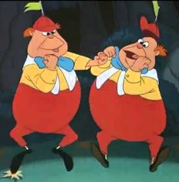

To understand the context of this problem, read the class #04 exercise sheet. After the deadline the problem stays open on Mooshak, but submissions no longer count towards your grade.
In this problem you should submit a function as described. Inside the function do not print anything that was not asked!
The name of the .py source file you submit to Mooshak should NOT start with a digit (you will get an error if you submit it like that).

After the palindromic task, Tweedledum and Tweedledee, who are never satisfied without a bit of argument, found themselves in a new heated debate. This time, the subject was numbers: odd vs even.Tweedledum, pacing around with a smug expression, said, "Odd numbers are far more interesting! They have that unique, irregular charm—just like Wonderland itself. Look at numbers like 1, 3, 5... they stand alone, unpaired, and mysterious. Odd numbers are just... better!
Tweedledee, ever the more practical one, raised his finger and countered, "Nonsense! Even numbers are clearly superior. They are perfectly balanced, divisible by 2, and represent harmony. Look at 2, 4, 6... there's symmetry, order, and balance. Even numbers make things neat and tidy!"
The argument grew louder, and soon, they decided that it was time to settle this debate. But they needed someone to do it—a neutral party. They turned to you, their bright student of Python, for assistance. Buy you certainly like all the numbers and devised a clever way of keeping both satisfied...
Write a function odd_even(tup) that given a tuple tup returns a new tuple that has first all the values that were on odd positions, in the same order as they were originally, and then the values that were in even positions, also in the same order.
Consider for instance a tuple (1,2,3,4,5,6,7,8,9), in which number i is in the i-th position, with red for the odd position values and blue for the even ones. In this case the desired answer is the tuple (1,3,5,7,9,2,4,6,8), with the odd positioned elements coming before, followed by the even ones.
The following limits are guaranteed in all the test cases that will be given to your program:
| 1 ≤ |tup| ≤ 100 | size of the input tuple |
Example Function Calls
print(odd_even( (1,2,3,4,5,6,7,8) ))
print(odd_even( ("a","b","c","d","e","f") ))
print(odd_even( ("hello", 42, "oh no", 2.0, 14) ))
Example Output
(1, 3, 5, 7, 2, 4, 6, 8)
('a', 'c', 'e', 'b', 'd', 'f')
('hello', 'oh no', 14, 42, 2.0)